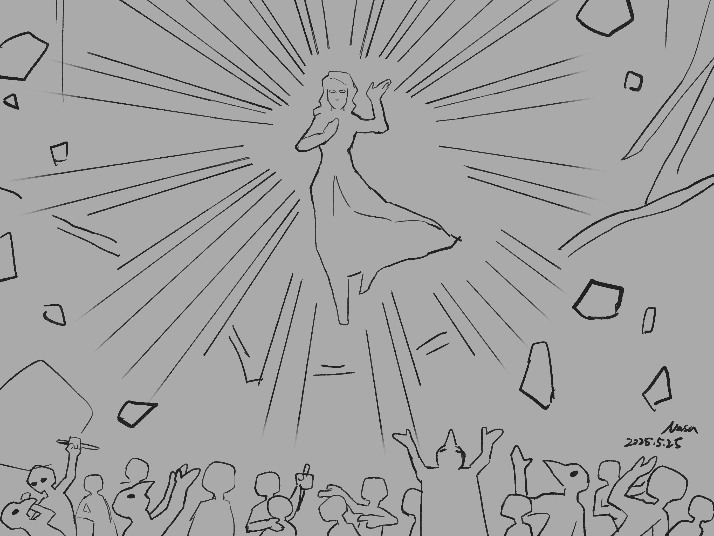

Chapter 4: The Divine Dominion of Everlasting and Love
Requiem of the Feathered Estate


Requiem of the Feathered Estate
15051.09.14
隨著利希恩・阿莫雷一手拎著攤軟的岡斯踏入儀式現場，冒險者們也看見跟在一旁的一名羽僕雙手端著他們從卓茲克莊園取得的「月神王冠」。
冒險者們對利希恩的情緒各個不同：羅特因為利希恩能對愛情與他有所共鳴，所以格外同情；烏波則視利希恩為月神芬尼爾的敵人，勢不兩立；賽柏認為自己被困在這裡離不開，都是利希恩的錯；GoR則看著被固定在座椅上的岡斯，情緒激動，對利希恩十分不開心；庫登在這莊園內也被困住太久，對於利希恩的情緒一言也說不盡，於是他慢慢地退後，決定保持一點距離，看看夥伴們決定怎麼做。
利希恩詢問GoR他對於先前的提議有何想法：用一個更重的靈魂，來取代岡斯？看著背上硬生生插著金屬「翅膀」的岡斯，以及不知何時從他身上爬下來的蘿絲，早已到座椅旁，拚命的呼喚岡斯，輕拍他那被固定住的無力的手。
GoR最終還是答應了。
利希恩卸下固定住岡斯雙手的裝置。說時遲那時快，GoR試圖利用這個空隙將岡斯奪走，但利希恩輕易地就阻止了他。「就算你帶走了他，你也離不開這裡的。」
在利希恩的引導下，GoR坐上了這個不屬於他的座椅—在權衡之下，他坐在座椅的扶手上，盡可能保持平衡。接著，利希恩拿過羽僕手上的王冠，輕輕置於GoR的頭頂。與過去在卓茲克莊園戴上王冠不同，GoR的感受並不是刺骨的痛，而是一種輕微的不適。
烏波將岡斯、蘿絲和其他平時攀附在GoR身上的孽物一一裝在自己的背包內，作為保護。GoR以外的冒險者們都慢慢退到羽僕與賓客們觀禮的位置前方。接下來的，就看利希恩了。
利希恩口中唸起一段月神教的禱文，祈求著月神芬尼爾最後一次藉助他力量，以喚回他的被奪走的愛。
霎時，儀式會場的天花板破了一個洞，天光如祝福般灑下，但與利希恩預期的不同，這道光並非照射在頭戴王冠的GoR頂上，而是在他，利希恩・阿莫雷的頭上。冒險者們看著利希恩緩緩的騰空浮起，彷彿聽見他顫抖著喃喃自語：「怎麼會是我？」
接著，一道強光閃瞎了眾人的眼。再次睜開雙眼時，曾經名為利希恩的那人，已高高浮於空中，以類似半透明態的模樣，俯視眾生。
「原來，這就是永恆與愛的力量嗎？」
永恆與愛之神阿莫雷
利希恩，或者應該說，現在被稱為永恆與愛之神阿莫雷（阿莫雷, 永恆與愛之神），以一個與過往不同的聲音，平穩地說著。
仰望神跡，地面上卻不平靜。冒險者們發現賓客們逐一化為半透明的黑影，開始攻擊羽僕們。冒險者們盡可能優先拯救自己的夥伴，先將被固定在座椅上的GoR放了下來。一離開座椅，GoR卻感到王冠格外的痛處—就像當時在卓茲克莊園時一樣。不過，他輕易的就將王冠取了下來，交給了烏波。
冒險者們擺好陣型，準備迎接來自賓客，或是羽僕的襲擊。浮在空中的阿莫雷以他的神聖力量將大量的賓客黑影們擊滅，同時也好好地保護著他的羽僕們。「與愛為敵的人，都是我的敵人。」阿莫雷如此說道。然而，方才照下天光的天花板破洞，卻逐漸崩塌，巨石砸向冒險者們、羽僕們，和賓客們。冒險者們在黑影們被全數擊破後逐一昏了過去。
「有些事情，也許你已經忘記了，但真正對你重要的事情，你絕對、絕對不會忘記。不要放棄，羅特，要記得……不要忘記。」
「芬尼爾走了，但你還停在原地。如果你還是不願意改變，烏波，不妨回到當初你被製造出來的地方吧。」
「賽柏，你和奈西斯的連結不只是神與信徒，繼續追隨奈西斯，接受神諭，成為祂的忠誠僕從吧！」
「岡斯和蘿絲已經團圓了。你的冒險目的已經達成了。那你的下一步，是什麼呢，GoR？」
「放下仇恨吧，庫登，因為世界是由愛構成的。你心中萬惡不赦的仇人，很有可能有他的不得已之處，也很有可能和你想得很不一樣。」
15051.09.15
GoR從昏迷中甦醒，身邊是一片的金色羽毛，鋪在地上、鋪在他熟睡的夥伴們的身上。
GoR逐一叫醒烏波和賽柏，但羅特卻陷入了沉睡之中。庫登則完全沒見到他的身影。
醒來的冒險者們看向四周。偌大的莊園憑空消失，留下一大片金羽，一觸即碎。烏波看見不遠處有一間小房子，雖然很小，卻金碧輝煌，四面八方的平民百姓們慢慢走向那兒。他們的聲音，彷彿在呼喚著「永恆與愛之神阿莫雷」。但烏波的內心中只有憤怒。身為芬尼爾的忠實信徒，他可以深刻感受到此時芬尼爾抵不住的怒火—愛，那原本屬於他的權能，竟然被利希恩・阿莫雷這傢伙奪走了。
承載著這股憤怒，烏波衝向那幢金房子。裡面，是簡陋的裝設，還沒擺好的木桌、木椅、幾根蠟燭，一座小型祭拜壇上，掛著一幅屬於利希恩的肖像畫。
烏波一怒之下，將燭火吹大，房子內瞬時間是一片大火。烏波讓自己變得好幾倍大，不斷敲著房子和逃出來的人。賽柏和GoR發現了異狀趕了過去，但在烏波的操弄下，他們也只能默默看著，出不了手。
直到現場只剩下一片殘骸。四眼望去，除了冒險者外，已經沒有任何生還者了。
冒險者們對於烏波的暴怒感到害怕。與烏波冒險了好一段時間，羅特從未看見他這樣的行為過。
「我討厭小偷。」烏波喃喃自語道，同時在營帳旁的營火邊煮著一碗綠綠的粥。
羅特醒來時，發現揣在他懷間披風下，是一張屬於羽僕的面具。他知道不能讓此時的烏波看見它，太危險了。看著烏波煮的綠粥，太危險了。羅特掏出自己的口糧，分給了賽柏和GoR。
冒險者們思索著接下來該去哪，而烏波似乎執意要去某個地方。他模糊的指了一個方向，說著大概要一個月左右的步行時間可以到。羅特透過心靈感應，分別和賽柏以及GoR溝通，並達成了共識—雖然羅特知道那肯定是屬於月神的地方，是他極度想避免接近的地方，但他們也害怕獨自放行失控的烏波，會造成多大的損傷，因此答應他陪他一起去。
夜已深，覆羽莊園已消失，但一個新的神，也誕生了。
15051.09.14
As Lysien Amoret entered the ceremony site carrying the limp Guns in one hand, the adventurers also saw a feathered servant following beside him holding the "Crown of the Moon God" they obtained from Drozik Manor in both hands.
The adventurers have different emotions towards Lysien: Lott is particularly sympathetic because Lysien can resonate with him about love; Ubbo regards Lysien as an enemy of Phyneal, the moon god, and they are irreconcilable; Psyber thinks that it is Lysien's fault that he is trapped here and cannot leave; GoR looks at Lysien who is fixed on the seat. Guns, agitated, was very unhappy with Lysien; Kudan had been trapped in this manor for too long and couldn't say enough about Lysien's emotions, so he slowly backed away, deciding to keep a little distance to see what his friends decided to do.
Lysien asked GoR what he thought about the previous proposal: to replace the Guns with a heavier soul? Looking at Guns with metal "wings" stuck on his back, and Rose who climbed off him at some point, she had already reached the seat, calling Guns desperately and patting his weak hand that was fixed.
GoR finally agreed.
Lysien removes the device holding Guns' hands in place. Soon enough, GoR tried to take advantage of this gap to snatch Guns away, but Lysien easily stopped him. "Even if you take him away, you can't leave here."
Under Lysien's guidance, GoR sat on the seat that did not belong to him—under consideration, he sat on the armrest of the seat, trying to keep his balance as much as possible. Then, Lysien took the crown from the servant's hand and gently placed it on GoR's head. Unlike in the past when wearing the crown at Drozik Manor, what GoR felt was not a sharp pain, but a slight discomfort.
Ubbo puts Guns, Rose and other evil objects that usually cling to GoR one by one in his backpack as protection. The adventurers other than GoR slowly retreated to the front where the servants and guests were watching the ceremony. Next, it’s up to Lysien.
Lysien chanted a Lunar cult prayer, praying to the moon god Phyneal to use his power for the last time to regain his stolen love.
In an instant, a hole was broken in the ceiling of the ceremony venue, and light from the sky poured down like a blessing, but unlike Lysien's expectation, this light did not shine on the top of GoR wearing a crown, but on his head, Lysien Amoret. The adventurers watched Lysien slowly rise into the air, and seemed to hear him trembling and muttering to himself: "How could it be me?"
Then, a bright light blinded everyone's eyes. When he opened his eyes again, the man once named Lysien was already floating high in the air, looking down at all living beings in a translucent state.
"So, is this the power of eternity and love?"
Amoret, God of Eternity and Love
Lysien, or rather, now known as Amoret, God of Everlasting and Love, spoke steadily with a different voice than before.
Looking up at the miracle, the ground is not peaceful. The adventurers discovered that the guests turned into translucent black shadows one by one and began to attack the servants. The adventurers gave priority to saving their friends as much as possible, and first put down GoR, which was fixed on the seat. As soon as he left the seat, GoR felt the pain of the crown - just like when he was at Drozik Manor. However, he easily took off the crown and handed it to Ubbo.
The adventurers set up their formations, preparing to receive attacks from guests or servants. Amoret, floating in the air, used his divine power to destroy a large number of guest shadows, while also protecting his servants. "Anyone who is an enemy of love is my enemy." Amoret said. However, the hole in the ceiling that had just illuminated the sky gradually collapsed, and huge rocks fell on the adventurers, servants, and guests. The adventurers fainted one by one after the black shadows were all defeated.
"Maybe you have forgotten some things, but you will never, never forget the things that are really important to you. Don't give up, Lott, remember...don't forget."
"Phyneal is gone, but you are still where you are. If you are still unwilling to change, Ubbo, you might as well go back to the place where you were created."
"Psyber, your connection with Nessis is more than just a god and a believer. Continue to follow Nessis, accept the oracle, and become his loyal servant!"
"Guns and Rose We have been reunited. Your adventure goal has been achieved. What is your next step, GoR? "
"Let go of hatred, Kudan, because the world is made of love. The evil enemy in your heart may have his own reasons, and it may be very different from what you think."
15051.09.15
GoR When he woke up from a coma, he was surrounded by golden feathers spread on the ground and on his sleeping companions.
GoR wakes up Ubbo and Psyber one by one, but Lott falls into a deep sleep. Kudan did not see him at all.
The adventurers woke up and looked around. The huge manor disappeared out of thin air, leaving behind a large piece of golden feather that shattered at the touch of a touch. Ubbo saw a small house not far away. Although it was small, it was splendid. Common people from all directions were slowly walking towards it. Their voices seemed to be calling "Amore, the God of Eternity and Love." But inside Ubbo there was only anger. As a loyal believer of Phyneal, he could deeply feel Phyneal's irresistible anger and love at this time. The power that originally belonged to him was actually taken away by this guy Lysien Amoret.
Carrying this anger, Ubbo rushed towards the golden house. Inside, there is a simple decoration, with a wooden table, wooden chairs, and a few candles that have not yet been set up. On a small altar of worship, a portrait belonging to Lysien hangs.
Ubbo In a rage, he blew out the candle and the house was instantly ablaze. Ubbo makes himself several times bigger and keeps knocking on the house and the people escaping. Psyber and GoR noticed something strange and rushed over, but under the manipulation of Ubbo, they could only watch silently and could not take action.
Until there is only a piece of wreckage left at the scene. Looking around, there were no survivors except the adventurers.
The adventurers are afraid of Ubbo's rage. Having been adventuring with Ubbo for quite some time, Lott has never seen him behave like this.
"I hate thieves." Ubbo murmured to himself while cooking a bowl of green porridge by the campfire next to the tent.
Lott When he woke up, he found that under the cloak in his arms was a mask belonging to a feather servant. He knew he couldn't let Ubbo see it at this time, it was too dangerous. Watching Ubbo cook green porridge is too dangerous. Lott took out his own rations and gave them to Psyber and GoR.
The adventurers were thinking about where to go next, but Ubbo seemed determined to go somewhere. He vaguely pointed in a direction and said it would take about a month to walk there. Lott communicated with Psyber and GoR through telepathy and reached a consensus - although Lott knew that it must be the place belonging to the moon god, a place he desperately wanted to avoid approaching, they were also afraid of how much damage would be caused by letting the out-of-control Ubbo alone, so they agreed to accompany him.
It is late at night, Feathered Estate has disappeared, but a new god has also been born.